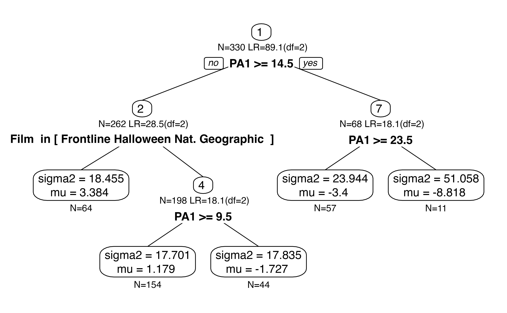
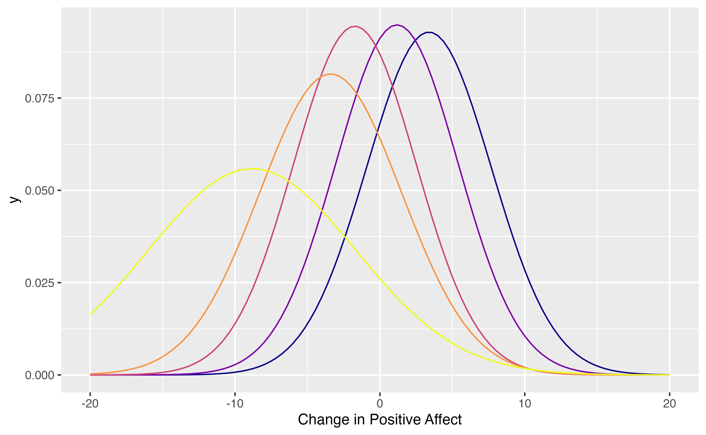

SEM Trees with score-based tests
Andreas M. Brandmaier
2023-11-24
Source:vignettes/score-based-tests.Rmd
score-based-tests.RmdIn this example, we will explore how score-based SEM trees can be used. Score-based tests for variable and split-point selection are preferable because they are fast to compute, perform unbiased variable selection, and have better statistical power than some other selection algorithms proposed earlier.
For this illustration, we will use the affect dataset
and a simple (non-latent) SEM, which just has one observed variable.
Using such a simple model is similar to using a conventional decision
tree or random forest; however, the SEM tree version not only finds
differences in the mean prediction across leafs but also in the
variances (ie., individual differences) of the criterion variable.
Load data
Load affect dataset from the psychTools package. These
are data from two studies conducted in the Personality, Motivation and
Cognition Laboratory at Northwestern University to study affect
dimensionality and the relationship to various personality dimensions.
In the following code, we replace the numeric film labels with the movie
titles. Also, we select a subset of predictors including the film,
personality dimensions, trait anxiety and affect before having watched
the movie.
library(psychTools)
data(affect)
affect$Film <- factor(affect$Film, ordered = FALSE,
labels=c("Frontline", "Halloween", "Nat. Geographic","Parenthood"))
tree.data <- affect[,c("Film","neur","ext","soc","traitanx","NA1","PA1")]
tree.data$DeltaPA <- affect$PA2-affect$PA1
knitr::kable(head(tree.data))| Film | neur | ext | soc | traitanx | NA1 | PA1 | DeltaPA |
|---|---|---|---|---|---|---|---|
| Nat. Geographic | 9 | 18 | 10 | 24 | 2 | 26 | -19 |
| Nat. Geographic | 12 | 16 | 8 | 41 | 4 | 10 | -5 |
| Nat. Geographic | 5 | 6 | 1 | 37 | 2 | 4 | -1 |
| Nat. Geographic | 15 | 12 | 6 | 54 | 0 | 1 | -1 |
| Nat. Geographic | 2 | 14 | 6 | 39 | 13 | 7 | 9 |
| Frontline | 15 | 6 | 4 | 51 | 1 | 5 | -3 |
Create simple model of state anxiety
Here, we create a simple SEM with a single observed variable. No
latent variables - only two parameters: mean of DeltaPA and
variance of DeltaPA.
library(OpenMx)
manifests<-c("DeltaPA")
latents<-c()
model <- mxModel("Simple Model",
type="RAM",
manifestVars = manifests,
latentVars = latents,
mxPath(from="one",to=manifests, free=c(TRUE), value=c(1.0) , arrows=1, label=c("mu") ),
mxPath(from=manifests,to=manifests, free=c(TRUE), value=c(1.0) , arrows=2, label=c("sigma2") ),
mxData(tree.data, type = "raw")
);
result <- mxRun(model)
#> Running Simple Model with 2 parameters
summary(result)
#> Summary of Simple Model
#>
#> free parameters:
#> name matrix row col Estimate Std.Error A
#> 1 sigma2 S DeltaPA DeltaPA 27.90300741 2.1722417
#> 2 mu M 1 DeltaPA 0.09514715 0.2907414 !
#>
#> Model Statistics:
#> | Parameters | Degrees of Freedom | Fit (-2lnL units)
#> Model: 2 328 2034.982
#> Saturated: 2 328 NA
#> Independence: 2 328 NA
#> Number of observations/statistics: 330/330
#>
#> Information Criteria:
#> | df Penalty | Parameters Penalty | Sample-Size Adjusted
#> AIC: 1378.9818 2038.982 2039.018
#> BIC: 132.8794 2046.580 2040.236
#> CFI: NA
#> TLI: 1 (also known as NNFI)
#> RMSEA: 0 [95% CI (NA, NA)]
#> Prob(RMSEA <= 0.05): NA
#> To get additional fit indices, see help(mxRefModels)
#> timestamp: 2023-11-24 11:21:41
#> Wall clock time: 0.103862 secs
#> optimizer: SLSQP
#> OpenMx version number: 2.21.1
#> Need help? See help(mxSummary)Score-based Tests
Use score-based tests to create the tree. Use Bonferroni-correction to adjust for multiple testing of predictors.
library(semtree)
ctrl = semtree.control(
method="score",
bonferroni = TRUE)
tree = semtree( model = result,
data = tree.data,
control=ctrl)Now let us plot the tree.
plot(tree)
Implied mixture model:
tndata <- semtree::getTerminalNodes(tree)
cols <- viridis::plasma(nrow(tndata))
pl <- ggplot2::ggplot(data = data.frame(x = c(-20, 20)), ggplot2::aes(x))+
ggplot2::xlab("Change in Positive Affect")
for (i in 1:nrow(tndata)) {
pl <- pl + ggplot2::stat_function(fun = dnorm,
n = 101, col=cols[i], args = list(mean = tndata[i,2], sd = sqrt(tndata[i,1])))
}
plot(pl)
Let us inspect the group with the largest negative change. This is the group of participants, who started out with a high positive affect and then had to watch a war movie.
i <- which.min(tndata$mu)
pl <- pl +ggplot2::geom_area(stat = "function",
fun = function(x){dnorm(x,mean=tndata[i,2],sd=sqrt(tndata[i,1]))},
fill = cols[i])+
ggplot2::geom_label(x=-10,y=.12, label="People with very high positive \naffect, which then watched\n a war film")
plot(pl)